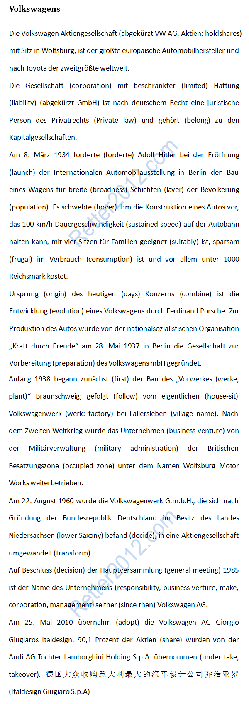

返回主页
挑战原文：德国大众

In May 2010, Italdesign agreed to transfer 90.1% of its shares to AUDI AG subsidiary Lamborghini Holding S.p.A. in order to keep Volkswagen's Italian holdings bundled together.
意大利设计-乔治亚罗公司（意大利语：Italdesign-Giugiaro S.p.A）是意大利一家汽车设计和工程公司，总部设于都灵。1968年,乔治亚罗（Giugiaro）和工程师曼托瓦尼创立了Italdesign，主要给国际汽车生产商提供汽车样式、工艺和原型生产。
1970年代乔治亚罗为大众汽车设计大众帕萨特、大众高尔夫、大众尚酷三款车型。
乔治亚罗（Giugiaro）毕业于都灵美术学院，17岁进入菲亚特汽车公司工作。 后来，乔治亚罗加入了有着悠久历史的博通设计室，师从吕思奥・博通。
Giorgetto Giugiaro (1938) is an Italian automobile designer. Giugiaro was named Car Designer of the Century 1999 and inducted into the Automotive Hall of Fame in 2002.
version:1.0; jobnet@188.com © retter2012.com